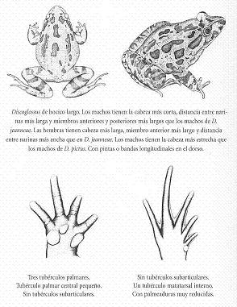
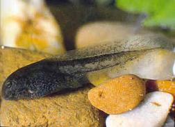
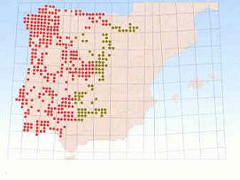

|
| Sapillo
pintojo ibérico |
Discoglossus
galganoi |
| Orden:
Anura, familia: discoglossidae |
 Descripción
Descripción |
Aspecto
de rana con hocico puntiagudo. pupila abombada.
Timpano no conspicuo. |
| Lámina |
 |
| Fotos |
|
Morfo
manchado |
|
Morfo
rayado |
|
Adulto |
Anuro
de talla mediana -normalmente en torno a los 65
mm., aunque excepcionalmente puede alcanzar los
80 mm.- cuya morfología externa le confiere
más aspecto de rana que de sapo. Cabeza
ancha en su parte posterior y deprimida, con hocico
puntiagudo y prominente respecto de la mándibula
inferior. Timpano imperceptible o apenas distinguible.
Ojos abultados, de pupila redondeada o subtriangular
(acorazonada o con forma de gota invertida). Miembros
anteriores fuertes, con cuantro dedos sin membranas
interdigitales; carecen de tubérculos subarticulares
y poseen tres tubérculo palmares, de los
cuales el interno es el más desarrollado.
Miembros posteriores también robustos pero
relativamente largos y adaptados al salto, con
cinco dedos unidos por amplias membranas. Piel
lisa o con verrugas más o menos aparentes,
granulosa en el vientre. |
Coloración
dorsal muy variable. Existen morfotipos manchados,
rayados y, mas raramente, lisos, que pueden coexistir
en una misma población. El primer caso
presenta manchas oscuras e irregulares sobre un
fondo de color variable, gris verdoso a pardo
amarillento. En el rayado aparecen tres franjas
(una vertebral y dos dorsolaterales) de color
pardo claro o amarillento sobre fondo pardo oscuro.
Con frecuencia, el triangulo entre los ojos y
el hocico presenta una tonalidad mas clara. Coloración
ventral blanquecina, a veces con manchas. Iris
dorado en su porción superior. |
| Dimorfismo
sexual |
| Los
machos presentan membranas interdigitales proporcionalmente
más extensas que las hembras y, segun ciertos
autores, alcanzan mayor talla que éstas.
durante el celo los machos presentan callosidades
nupciales negras en los dos dedos internos de las
extremedidades anteriores. También aparecen
papilas nupciales negruzcas en otros puntos del
cuerpo, especialmente en las zonas gular y ventral,
y el tubérculo palmar interno aumenta de
tamaño. |
| Descripción
de la larva |
 |
Suelen
alcanzar entre 25 y 35 mm. de longitud. El espiráculo
se sitúa característicamente en
el centro de la línea media del vientre.
Cresta caudal de forma convexa tanto superior
como inferiormente; cresta dorsal relativamente
baja. El extremo de la cola es anchamente redondeado.
Su color, muy oscuro o negro al principio, va
aclarandose paulátinamente.
|
Pueden
presentar muchas manchas oscuras tanto en el dorso
como en la parte musculosa de la cola. Resulta
característica la presencia en la membrana
caudas de un entramado o reticulado oscuro muy
fino, más visible al trasluz. |
|
|
Distribución |
 |
Tanto
el sapillo pintojo ibérico como el meridional
son formas endémicas de la península
ibérica. En principio, el ibérico
se distribuiría por la mitad occidental
de la Península, en zonas con predominio
de los sustratos graníticos o metamórficos;
su límite estaría determinado, hacía
el sur, por el Guadalquivir, mientras que, hacia
el este, coincidiría con las zonas de contacto
entre los sustratos graníticos y calcáreos
a lo largo de sierra Morena, montes de Toledo
y sistema Central; en el norte peninsular, su
límite oriental resulta por el momento,
más impreciso. |
| Variaciones
geográficas |
La
diferenciación entre las formas meridional
e ibérica esta actualmente bajo estudio;
cabe pensar que la aplicación de técnicas
de discriminación genética permitirá
resolver la posible existencia de varaciones significativas
en el seno de ambas especies. |
|
|
Hábitat |
Ocupan
gran variedad de ambientes, desde bosques de robles
y encinas y sus etapas degradadas, bosque mixtos, prados
y pastizales, sotos y bosques de ribera, hasta arroyos,
manantiales y marisma litorales, siempre cerca del agua
y en zonas con cierta cobertura herbácea. Para
la reproducción pueden utilizar encharcamientos
temporales, fuentes, balsas, navajos y abrevaderos,
generalmente de escasa profundidad y entidad. |
Presente
desde el nivel del mar hasta los 1600 m. de altitud
en la sierra de Guadarrama, si bien parece más
frecuente por debajo de los 500 m. |
|
Biología |
Son
anuros ágiles, pese a su aspecto de rana rechoncha.
Su actividad es preferentemente crepuscular, si bien
presentan cierta actividad diurna (más frecuente
en lo jovenes), especialmente en días lluviosos
o húmedos. Del mismo modo, pueden observarse
activos durante todo el año, aunque dicha actividad
disminuye en épocas secas y calurosas. El período
reproductor varía según las zonas y
puede extenderse desde principios de invierno hasta
finales de verano. Con frecuencia, los acoplamientos
y puestas se producen entre febrero y abril. El amplexo
es inguinal y de corta duración, a menudo en
el agua. Las hembras se aparean sucesivamente con
varios machos y depositan tandas de 20 a 50 huevos
cada vez; en un sólo día pueden poner
hasta 1.500 huevos, que no se presetna agregados sino
aislados en el fondo o entre la vegetación
acuática. Éstos son oscuros y su incubación
suele durar entre 2 y 9 días. Al eclosionar,
las larvas miden alrededor de 3 mm. y deben pasar
por un período de desarrollo de 29 a 60 días
antes de completar la metamorfosis. Los juveniles
son, por entonces, diminutos, con una longitud media
de tan sólo 10-11 mm. La madurez sexual se
alcanza a los 3-5 años, y su longevidad se
cifra en torno a los 10 años.
|
Su
dieta se basa fundamentalmente en invertebrados diversos
(insectos y larvas, lombrices, etc.); no obstante, en
su voracidad pueden predar también sobre inmaduros
de su propia especie. La alimentación de la larva
consiste básicamente en materia vegetal (algas
y vegetación acuática) y detritus. |
Entre
sus predadores se citan las culebras viperina y de collar,
numerosas aves (garcilla bueyera, cigüeña
común, rapaces (lechuaz común) y algunos
carnivoros (gineta). Sobre las larvas predan larvas
de insectos acuáticos, la culebra viperina y
ciertos urodelos (tritón jaspeado, por ejemplo) |
Su
mecanismo de defensa consiste en huir saltando en zigzag
para ocultarse en el agua o entre la vegetación
herbácea. |
Estado de la población y amenazas |
Sin
olvidar que la distribución real de la especie
no es aún bien conocida, cabe considerar que
es más frecuente en un sector occidental, con
poblaciones mejor distribuidas que en el oriental. Existen
poblaciones aisladas que podrían ver amenazados
sus hábitats por procesos de transformación
del entorno. |
|
Enlaces |
|
|
|